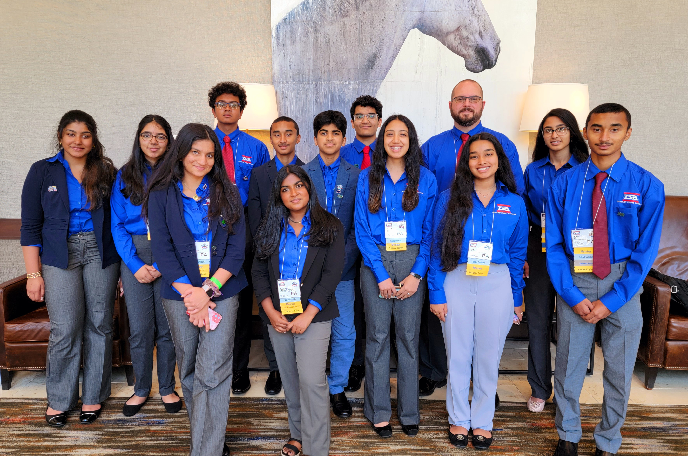
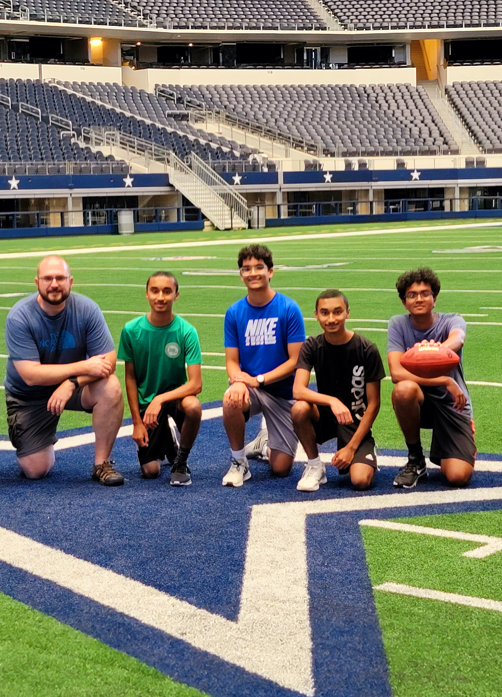
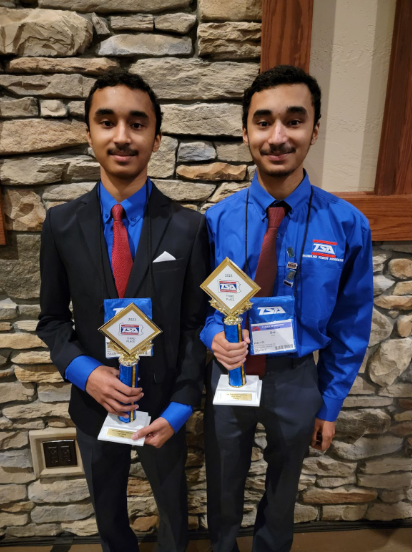
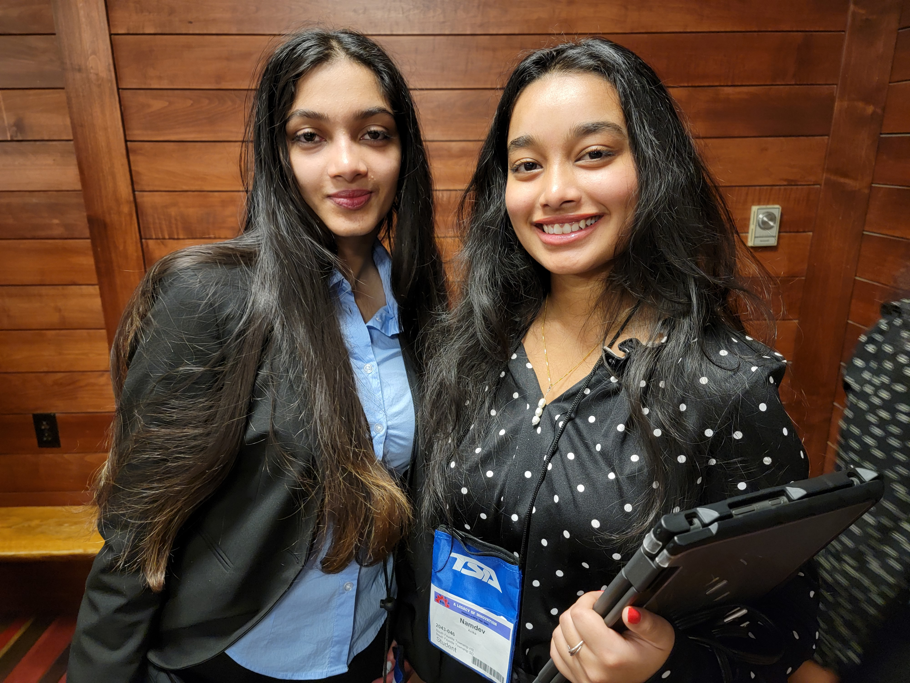
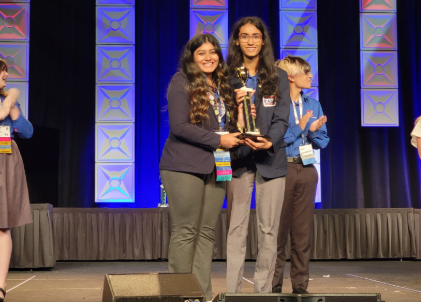
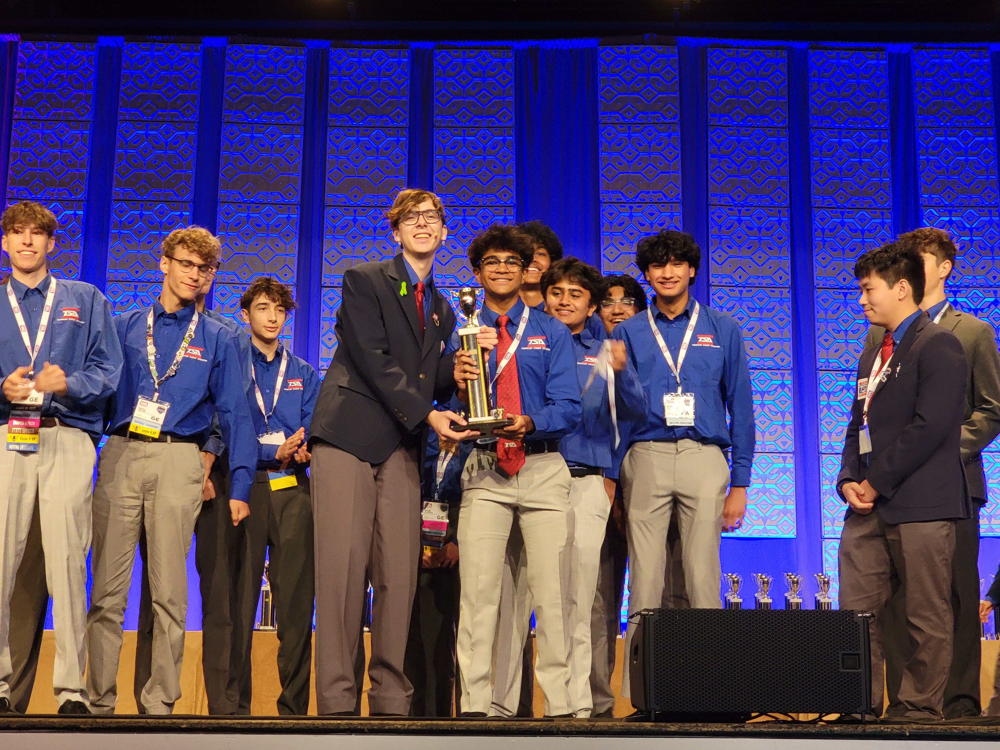
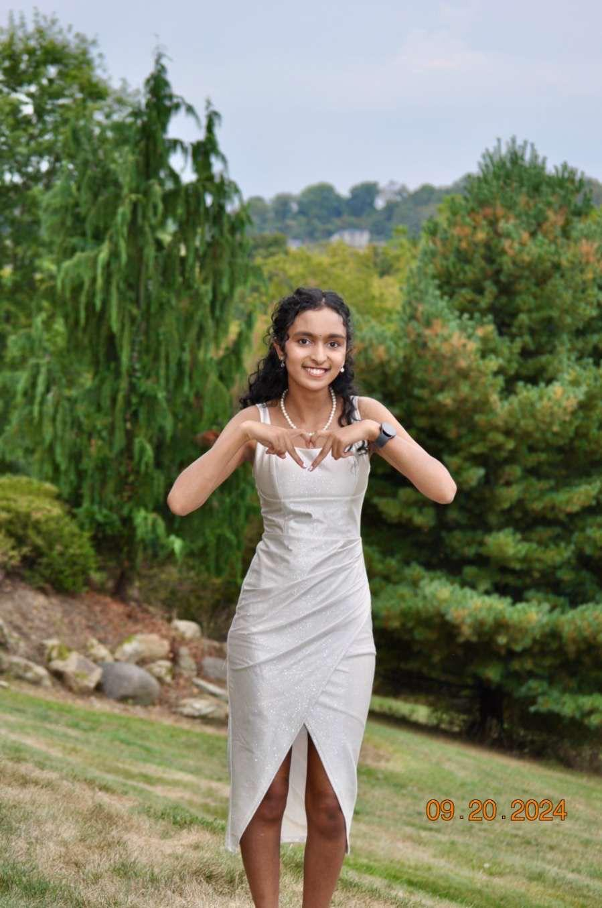
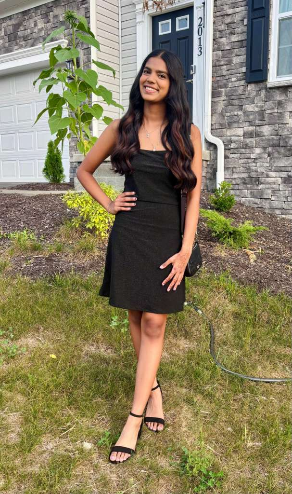
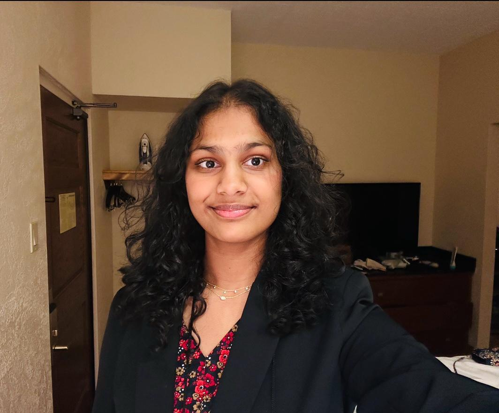

2022 Nationals

2022 Nationals

2023 States

2023 States

2024 Nationals

2025 Nationals
Tanvi (Freshman)
1. What is a challenge you came across in TSA?
Figuring out what project you wanna do and who you want to work with because when you decide what project you have to continue it and you can't choose something else.
2. How the TSA community has been helpful to you?
I think it helped me by giving me a club to do during my high school year and just like be a part of something.
3. What are some strengths our community has?
I think one of our biggest strengths is helping each other out with like projects because you can always go to your upperclassmen if you need help with what you need to do for it.

Oviya (Junior)
1. What are some strengths our community has?
We have a really supporting community and everybody is so willing to help others, especially in events they did the year before. Even at conferences, everyone is clapping for each other or just whenever they see our school's name up on the board.
2. How has TSA helped you?
TSA really taught me how to keep up with deadlines and to forego procrastination. It also encourages going beyond the rubric because the better the work you do, a higher result is what you will receive.

Alya (Freshman)
1. What are some strengths our community has?
Our TSA clubs shows a lot of diversity which helps us move with the times. Since everyone is at a different point in life we are able to learn more things. We are able to find an equal balance which shows that our community is healthy.
2. What is a challenge you came across in TSA?
Being the new student, I did not really have a mentor to guide me or tell me what to do in TSA, but with the help of my peers and some adults I was able to find what I was passionate about.

Anshika (Sophmore)
1. How has TSA provided life skills?
TSA taught me not to procastinate and do my work on time. Like last year when we did children storiesit was really hectic because we did not have a lot of planning. Time management is important.
2. What is your favorite TSA memory?
It would be states last year because we had so much fun competing and meeting new people.
3.What are some strengths our community has?
One of our strengths as a community is always rooting for each other and being there for one another.